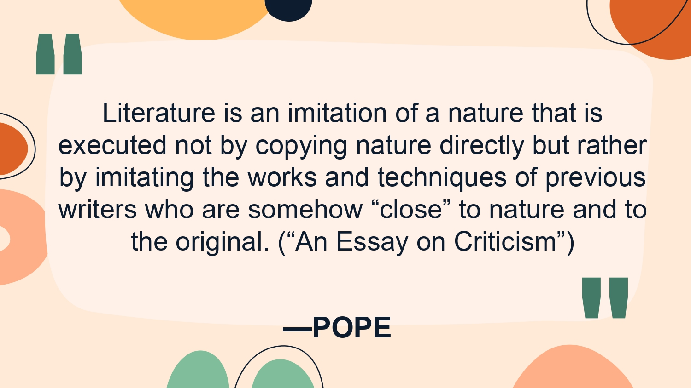
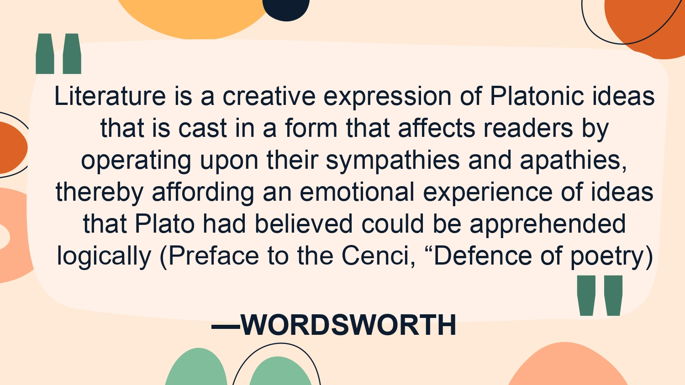
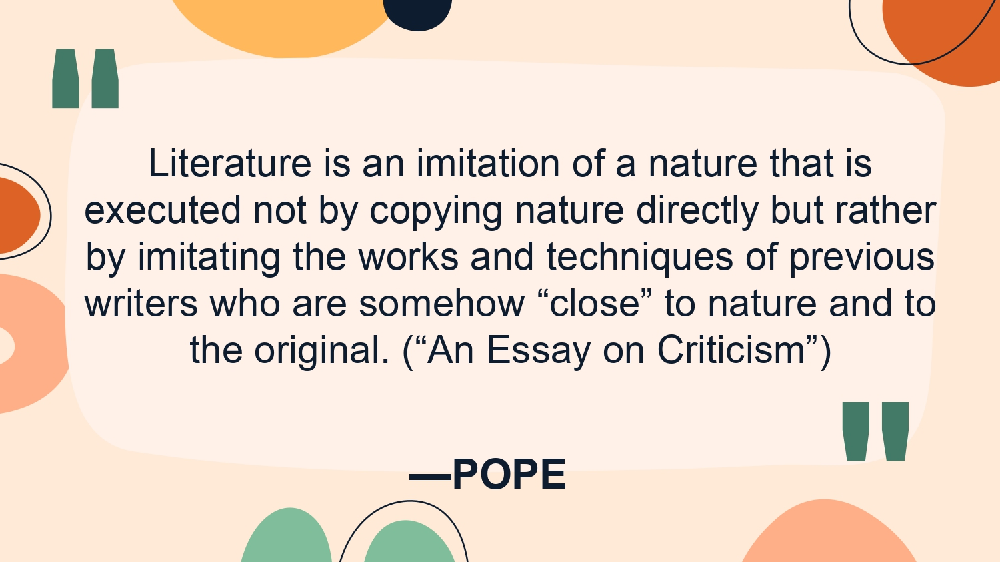
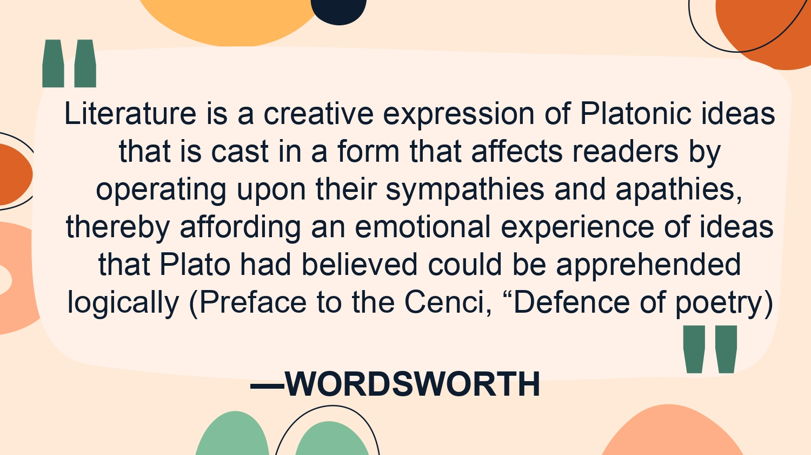

"Discovering Philippine's Heart and Soul
Through its Literature"
Today, we embark on a journey to discover the rich and diverse world of Philippine literature. In this site, we will explore what is literature & its importance, different types of Philippine literature, from pre-colonial oral traditions to contemporary works written in multiple languages. By learning about the unique qualities of each type of literature, we will gain a deeper understanding of the cultural, historical, and social contexts in which they were created. Get ready to immerse yourself in a world of imagination and creativity, as we showcase the rich tapestry of Philippine literature. So sit back, relax, and let's dive into the world of Philippine literature together!
The word literature is derived from the Latin term which means litera, and it is a branch of aesthetics, a branch of philosophy that deals with question “what is art"
It has been defined differently by various authors. Some loosely interpret literature as any matter written within a book, a pamphlet, or a magazine.
- Others define literature as a faithful reproduction of man’s manifold experiences blended into harmonious expressions.
- Because literature deals with ideas, thoughts, and emotions of man, literature can be said to be the story of man. Man’s loves, thoughts, grieves, dreams and aspirations coached in beautiful language is literature.
- Literature represents a language or a people: culture and tradition. But, literature is more important than just a historical or cultural artifact.
 


